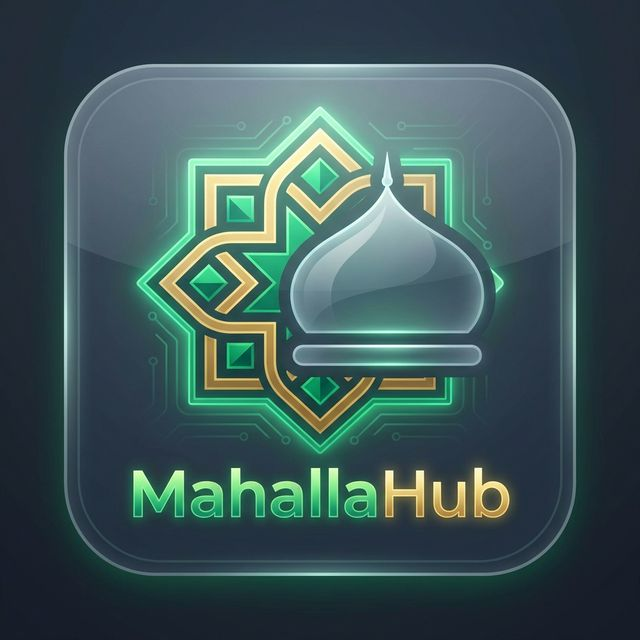

Real-time Geospatial SOS
Leveraging Django Channels, PostGIS, and Redis to achieve sub-second broadcast latencies to the 50 closest geographically verified nodes.

MahallaHub establishes highly secure, verified neighborhood networks engineered for real-time crisis response, trust-based skill bartering, and robust community governance.
Mosque Notice Board
Jummah prayers at 1:30 PM
From underlying distributed databases to ultra-low latency WebSockets, MahallaHub is structurally designed to handle hyper-local community surges dynamically.
Leveraging Django Channels, PostGIS, and Redis to achieve sub-second broadcast latencies to the 50 closest geographically verified nodes.
Strict verification protocols require document audits before granting network entry, significantly minimizing Bad Actors and noise within the Mahalla.
A digitized barter system inherently reducing economic friction. Users trade value through recorded smart ledgers, fostering community reliance over commercial expenditure.
Verification is a rigorous gatekeeping process requiring new users to furnish official government ID or utility documents proving local residence. Admin Mosque Committees review these to issue a 'Verified Neighbor' cryptography-backed token.
Security and modesty are paramount. 'Purdah Mode' obscures precise tracking by broadcasting a generalized 50m radius overlay rather than an exact pinpoint coordinate to non-emergency observers, ensuring female residents maintain absolute geospatial privacy.
Yes. The embedded Zakat Calculator continuously checks net liquidity against live, dynamically updated Nisab thresholds (Gold/Silver equivalents). Payments are securely routed precisely to verified Mosque Welfare accounts via integrated API endpoints.